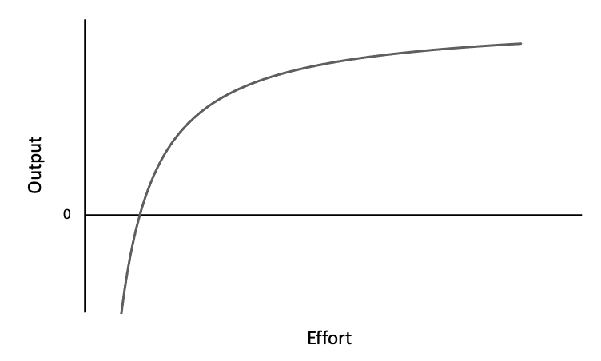

Accelerating, or lack thereof, on machines and in life.
Per The Physics of Ergometers, the "power is (approximately) related to the cube of the flywheel speed":
\[P = k \omega^{3}\]
Meaning that eight times the amount of power is required to increase the flywheel speed by two times, giving the following power vs. pace curve:
Increasing pace from 2:00 to 1:55 min per 500 m requires a 27 W power improvement, whereas increasing pace from 1:25 to 1:20 min per 500 m requires a 114 W power improvement. In other words, a 4.2% increase in pace requires a 13.3% increase in power, whereas a 5.9% increase in pace requires a 20% increase in power. What can't be accurately factored into the calculation is the toll that the upper ranges of power places on the athlete compared to lower ranges. Fatigue sets in exponentially as fast.
Cycling lacks the cubic effect:
http://www.americanroadcycling.org/america8/thebook/WattsSpeed.aspx?frm=MenVert http://bikecalculator.com/how.html [FINISH]MPG For Speed gives an overview of the effect speed has on gas consumption and total commute time. Given a daily 20-mile highway commute with a 30-highway-mpg car and gas prices at $4.00/gal, the following table and message is outputted:
| Speed | Daily Travel Time | Effective MPG | Cost/day | Cost/year |
|---|---|---|---|---|
| 55 MPH | 22 min. | 30.0 | $2.67 | $974.55 |
| 60 MPH | 20 min. | 29.1 | $2.75 | $1,003.75 |
| 65 MPH | 18 min. | 27.6 | $2.90 | $1,058.50 |
| 70 MPH | 17 min. | 24.9 | $3.21 | $1,171.65 |
| 75 MPH | 16 min. | 23.1 | $3.46 | $1,262.90 |
| 80 MPH | 15 min. | 21.6 | $3.70 | $1,350.50 |
Your bottom line: If you normally travel at 75 mph, you could be saving yourself $259.15 per year if you drove at 60mph - and you'd only be making your total commute 4 minutes longer.[FINISH]
These three cases are examples of what I broadly refer to as the output vs. effort curve, which takes many shapes depending on the application, but often follows the trajectory of an asymptotic function in quadrant I with a positive x-intercept. The generic formula is:
\[\text{O(E)} = -\frac{Y(M-E)}{E}\] Where:
There are a few points to make about this curve.
First, there is a minimum effort required to produce an output. The curve doesn't exist at \(E = 0\). It only exists beginning at \(E > 0\) and output only becomes positive at \(E > M\). Growth only happens with sufficient stimulation. Doing a couple of push-ups a day won't produce results. Studying a language for 30 minutes won't produce results. There is a minimum threshold for everything that involves effort and output.
Second, there exist negative outputs for \(E < M\). This output exists in the mental realm rather than the physical. Putting in effort and seeing no tangible results drains motivation, decreasing the likelihood of effort being expended in the future, making regression (or negative output) more likely.
[implications of *negative* output for low efforts]